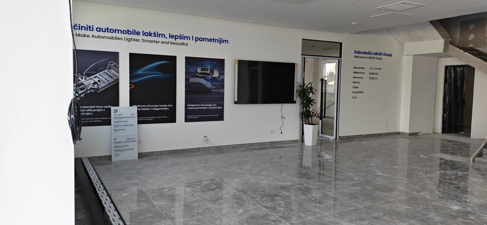
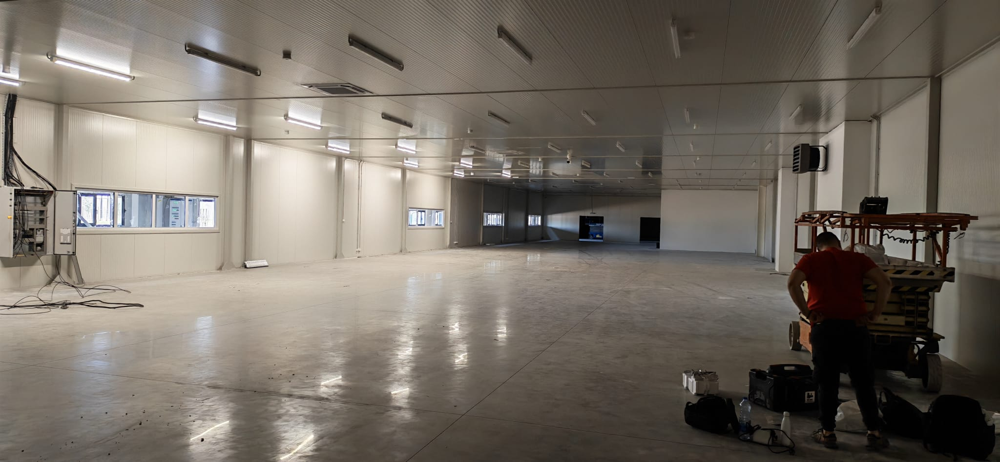
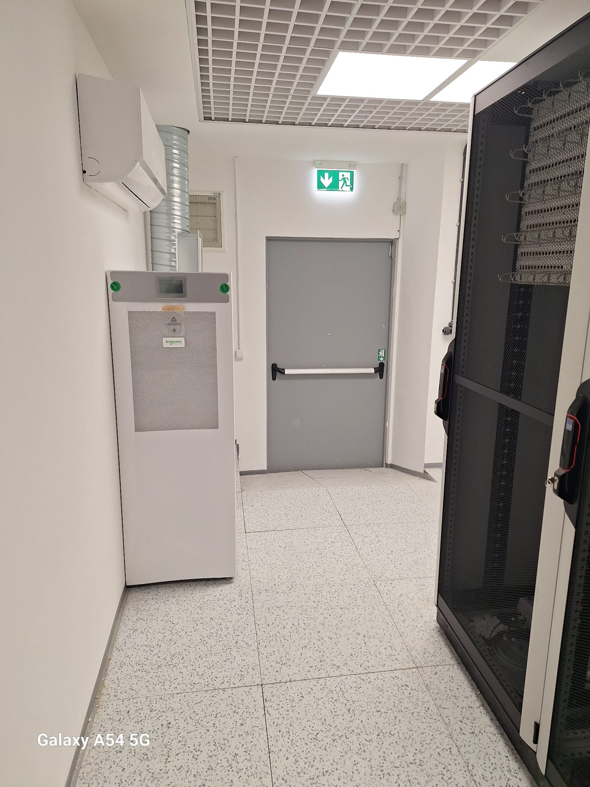

Robusna mrežna infrastruktura
Mreža projektovana za zahtevna operativna okruženja i kontinuiran rad sistema.


Tehnološka infrastruktura za industrijska okruženja koja zahteva stabilan rad, visoku dostupnost sistema i pouzdanu podršku svakodnevnim operacijama.
Industrijski objekti zahtevaju sisteme koji mogu pouzdano da funkcionišu u kompleksnim uslovima rada, uz jasnu organizaciju infrastrukture i dugoročnu stabilnost. TR Services razvija industrijska rešenja koja povezuju mrežnu infrastrukturu, sigurnosne sisteme i podršku ključnim operacijama u jednu funkcionalnu i održivu tehnološku celinu.
Mreža projektovana za zahtevna operativna okruženja i kontinuiran rad sistema.
Preglednost i nadzor prostora i procesa, uz centralizovan pregled zapisa.
Organizacija kretanja i sigurnosnih zona kroz ceo industrijski kompleks.
Podrška sistemima koji zahtevaju stabilnu vezu bez prekida u radu.
Servisni model za kritične infrastrukturne sisteme, sa definisanim vremenom reakcije.
U industrijskom okruženju tehnološki sistemi moraju biti usklađeni sa načinom rada objekta, organizacijom prostora, sigurnosnim zahtevima i kontinuitetom operacija. Zato projektujemo rešenja koja odgovaraju konkretnim uslovima na terenu, uz fokus na preglednost, otpornost i jednostavnije održavanje sistema tokom svakodnevnog rada.

Mrežna i sigurnosna infrastruktura u industriji često predstavlja osnovu za funkcionisanje drugih važnih servisa i procesa. Zato posebnu pažnju posvećujemo pouzdanosti, jasnoj arhitekturi sistema i mogućnosti brzog reagovanja u slučaju potrebe za intervencijom, izmenama ili proširenjem.

Pored implementacije, važan deo industrijskog rešenja je i njegova dugoročna podrška. Naš pristup podrazumeva sisteme koji su pregledni, održivi i spremni za buduće zahteve, uz servisni model koji podržava stabilnost infrastrukture i smanjenje rizika od zastoja.

Kontaktirajte nas za konsultacije i predlog infrastrukture prilagođene vašem objektu, operativnim uslovima i nivou pouzdanosti koji vaš sistem zahteva.
Kontaktirajte nas